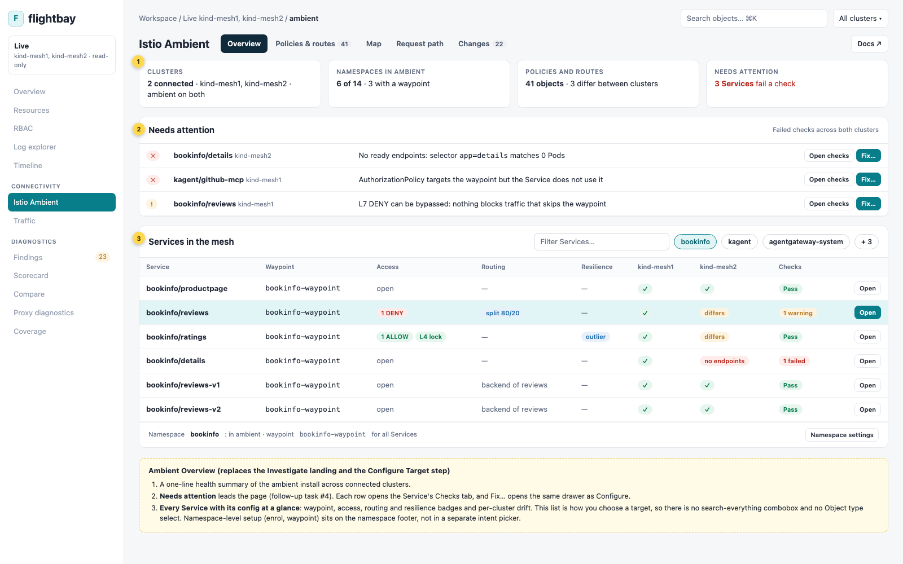
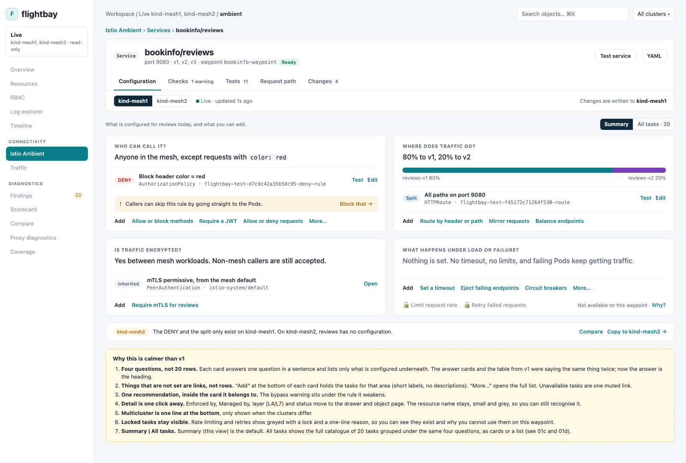
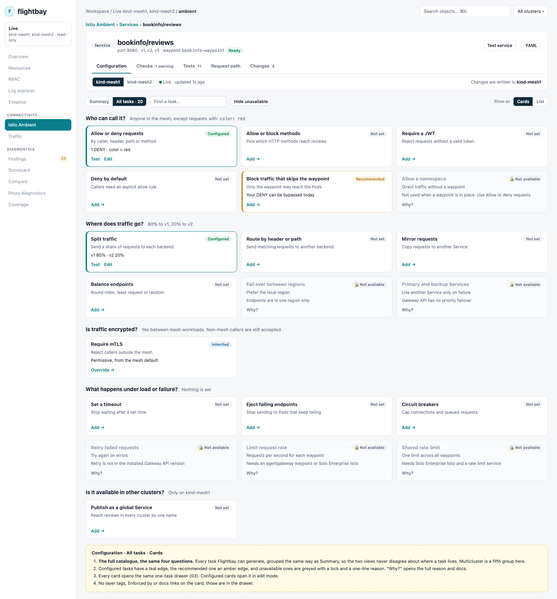
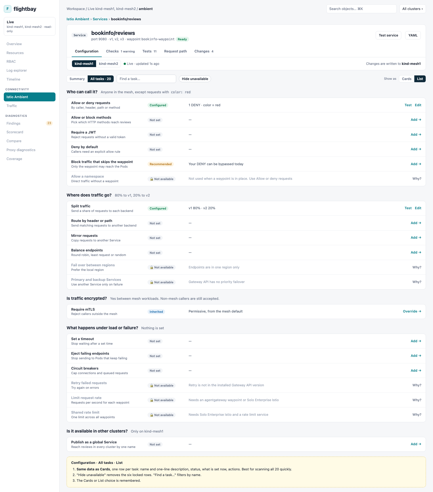
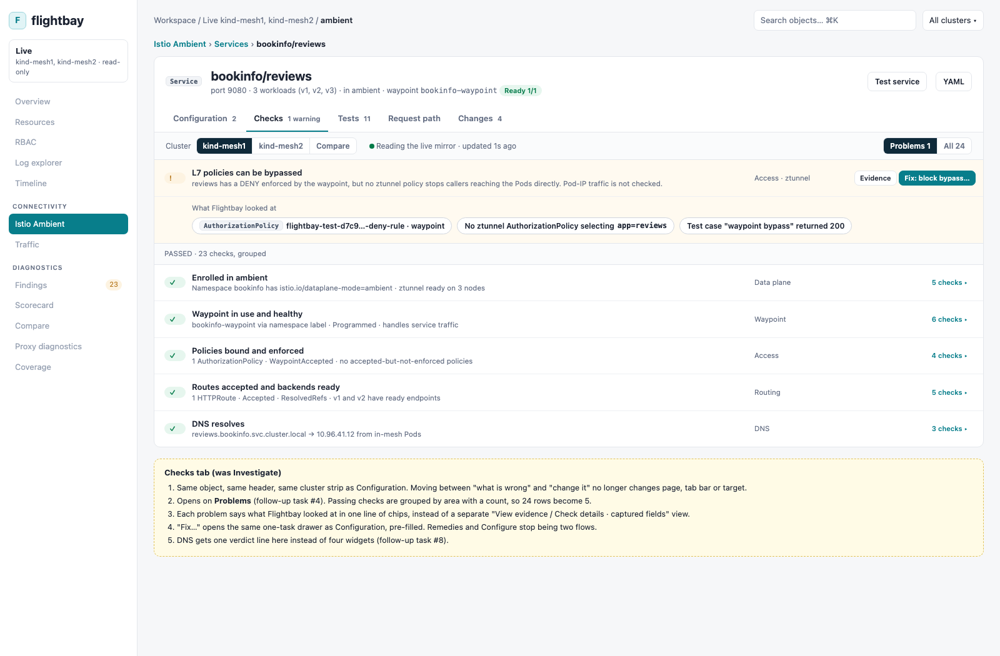
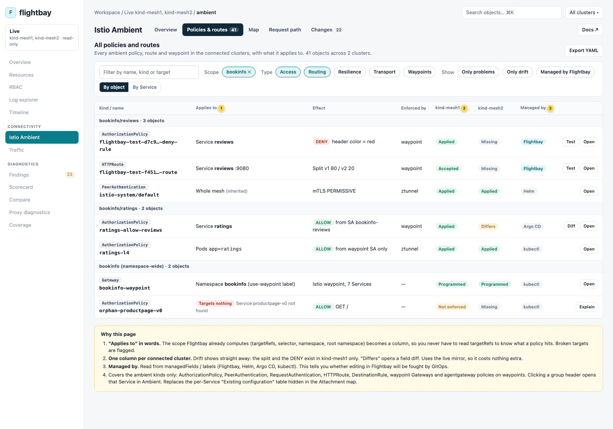
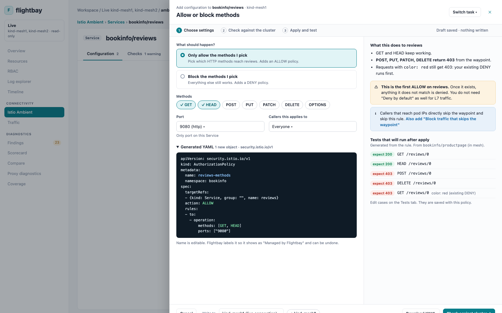

Proposal based on the 20 Oct screen recording (bookinfo/reviews on kind-mesh1) and the current web/ambient*.js code.
What is confusing today
Three navigation layers for one job. Sidebar "Istio Ambient", then five page tabs, then a target bar, then a breadcrumb ("All configurations › bookinfo/reviews › …" with "Switch configuration · 2"), then a 4-step stepper. On top of that there are three primary-looking buttons (New configuration, Test current traffic, Configure selected tasks).
The stepper is not a sequence. Step 2 "Configurations" is really a read-only overview of the Service. Editing an existing route skips step 2. Adding new tasks lives in a collapsed "Add another capability" at the bottom of step 2.
Existing config and available tasks are in different places. "Security policies" and "Routing" cards at the top, then a separate 10-card grid of tasks, then "7 tasks not available · why?". You cannot see in one place "for reviews: split is set, timeout is not, retries is impossible".
Target picking is a global search, not a scope. The Configure tab opens with a combobox over every Gateway and Service in every cluster. The scope you were already looking at (a Service in Resources, the map, a Finding) is not carried over by default.
Multiple tasks then one form. In the recording "Deny by default" and "Control HTTP methods" were both ticked, but the Configure and Review steps only show Control HTTP methods (1 to create). Either the first task was dropped or merged silently. Either way the UI did not say.
No effect or interaction explanation. Adding an ALLOW for GET/HEAD/PATCH/DELETE on a Service that already has a DENY changes the default for every other method. The Review step shows a resource diff but not "POST will now return 403".
Apply is buried and the states blur. "Review and apply" sits below the summary with a dry-run button, a context box and a second "Review and apply…" button, then a modal. Dry-run passed, applied and verified look similar (already noted in docs/ambient-follow-up-tasks.md #2).
Testing is per Service, not per thing you configured. "Test this rule" pre-fills one request. There is no saved expectation, no pass/fail, and nothing for HTTPRoutes beyond a generic HTTP batch.
Cluster scope is split. Global "All clusters" select, the target's cluster, and a separate write context. There is no way to see that the split exists on kind-mesh1 but not kind-mesh2.
Machine names everywhere.flightbay-test-f45172c71264f530-route is what a person has to recognise. Let the user name it and show a short description.
Improvements (Istio Ambient only)
The rest of the app (Overview, Resources, RBAC, Traffic, Diagnostics) and the sidebar stay as they are. Everything below happens inside the Istio Ambient entry.
Structure inside Istio Ambient
Today there are five tabs, all needing a target: Investigate, Attachment map, Request path, Configure and Changes. Replace them with two levels:
Service page (opened from any of those): Configuration · Checks · Tests · Request path · Changes.
Investigate becomes the Service's Checks tab and Configure becomes its Configuration tab. Same header, same cluster strip, so going from "what is wrong" to "change it" never changes target. Remedies open the same drawer as + Add.
Overview replaces the Investigate landing and the Configure Target step. Needs attention comes first, then a list of every mesh Service with its waypoint, access, routing and resilience badges, plus drift per cluster. You choose a target by clicking a row, so there's no Object type select or search over every Gateway.
Namespace setup (enrol in ambient, set up a waypoint) moves to a namespace footer on Overview, so the three-way intent picker ("Service traffic / Namespace setup / Waypoint connections") goes.
One read/write strip on the Service page shows which cluster you are reading, how fresh it is and where writes go. Compare shows drift between kind-mesh1 and kind-mesh2.
Remove "New configuration" and "Deploy Bookinfo demo" as header buttons. Keep one primary action per screen.
Map and Request path stay as they are. Only the Service card buttons are pointed at the new Service page, the dropped-line bug is fixed, and Request path gets a link into the task drawer when it finds a problem.
See all tasks and existing config (one list)
The Configuration tab is four question cards: Who can call it? Where does traffic go? Is traffic encrypted? What happens when it fails? Each gives a one-sentence answer, lists only what is configured (Test, Edit), shows at most one hint, and ends with short "Add" links for what is not set. Unavailable tasks are one muted link.
Show Managed by (Flightbay / Helm / Argo CD / kubectl from managedFields) and warn before editing GitOps-owned objects.
An Ambient Policies & routes tab listing every policy and route with "Applies to" in words, a column per connected cluster (Applied / Missing / Differs), and broken targets flagged. Extend coverage to GRPCRoute, TCPRoute and ServiceEntry over time.
Simpler wizard
One task per drawer, opened from the row's + Add or Edit. No multi-select grid, no Target step. Three inline phases: Choose settings → Check against the cluster → Apply and test.
Lead with intent wording ("Only allow the methods I pick" / "Block the methods I pick"), not "additive ALLOW policy".
A right-hand "What this does" panel: plain outcomes, interactions with existing policies on the same target ("this is the first ALLOW, everything else is now denied", "the existing DENY still runs first"), and bypass warnings with a one-click follow-up task.
YAML stays visible but secondary. Let the user name the resource; keep the Flightbay label for ownership and undo.
One footer, one primary button. Dry-run runs automatically on "Check"; the apply button only appears once it passes. Cluster targets are chips in the footer ("kind-mesh1" + "kind-mesh2").
Use the same status words everywhere: Draft, Checked, Applied, Live, Verified, Failed.
After apply, show "What now?": apply to the other cluster, add the recommended follow-up, run tests again, undo.
If multiple tasks are ever combined, list every object it will write before the user continues (follow-up task #9), and never drop a ticked task silently.
Tests per AuthorizationPolicy and HTTPRoute
Every AuthorizationPolicy and HTTPRoute gets a Tests tab with saved cases, each with an expected result, so the outcome is pass/fail.
Generate cases from the rule: one match, near misses (other value, header absent, other method), interaction with other policies on the target, and a waypoint bypass case.
Show Decided by per case (which policy allowed or denied it), from waypoint RBAC logs or reach.Explain, with a link to the log line.
For routes, compare expected vs observed weights with a tolerance, check which rule matched, and add a negative case. Timeouts, retries and mirrors add their own generated cases.
Choose the source (existing in-mesh workload, temporary pod, outside the mesh) and the cluster. Reuse the existing http-mesh-test runners.
Re-run a target's suites automatically after every Flightbay apply on that target, and show the result in Changes ("Verified" vs "Applied").
Mockups
0. Ambient · Overview: needs attention and every Service with its config

1. Service · Configuration: four questions, what is set, and what you can add

1c. Service · Configuration · All tasks (Cards): every task in the same groups

1d. Service · Configuration · All tasks (List)

1b. Service · Checks (was Investigate): problems first, Fix opens the same drawer

2. Ambient · Policies & routes: everything, with what it applies to and drift per cluster

3. One-task drawer: settings, effect and generated tests

3b. Same drawer after apply: progress, test results, what now